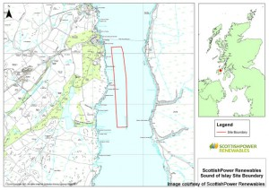
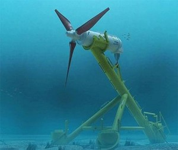
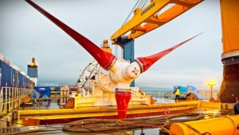

Case Study: Andritz Hydro Hammerfest Tidal Turbine
Imagine a windmill with three blades over 36 feet long, weighing over a hundred tons, providing 3GWh per year of energy, and oh yeah: it’s underwater. This isn’t the result of a futuristic fiction novel; tidal turbines like this are already providing electricity for thousands of homes. Tidal turbines follow the same principle as wind turbines; they capture the energy of a moving fluid. The tidal turbine examined in this case study is the HS1000, a 1MW tidal turbine created by Andritz Hydro Hammerfest.
Locations: EMEC; Sound of Islay, Orkney
Planned Future Locations (Commercial Scale): Caithness at Duncansby; Pentland Firth, Scotland

HS1000 Specs:
11.5m pivoting blades, 22m tall tripod base
Water Depth: 50-100m
Functional Water Speed: 1 to over 4 m/s
Rotation per minute: 7-10
Nameplate Capacity: 1MW
Funding: ScottishPower Renewables is providing just over $32 million for a 10 turbine array in Sound of Islay

The environmental impact of such turbines is considered negligible in most cases. The most prominent impact is during installation. The only impact considered above negligible following installation is the possibility of collision with locally important species such as the basking shark. However, this is only considered medium since the turbine spins at a relatively slow pace.

The HS1000 is currently in a “deploy and monitor” phase in a planned 86MW array off of the coast of Pentland Firth, Scotland. Construction was scheduled to begin in early 2015, although the current status of the project is unclear.